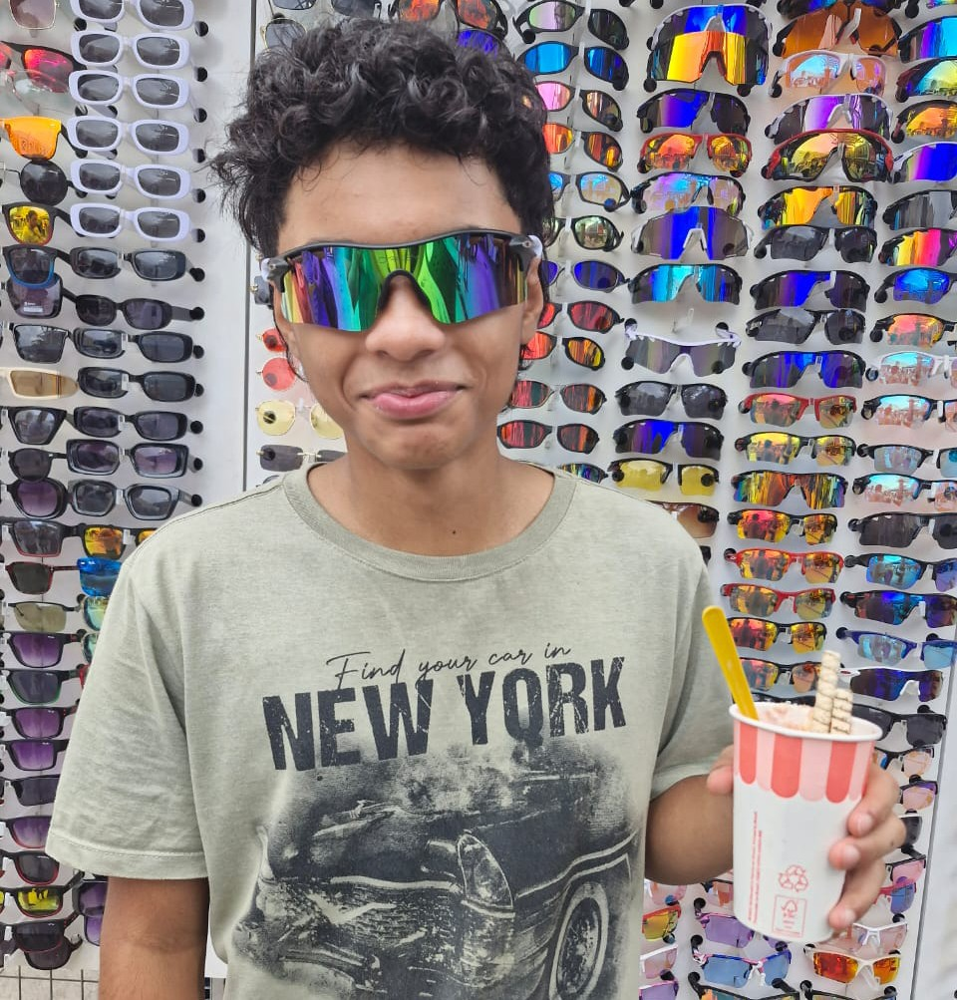
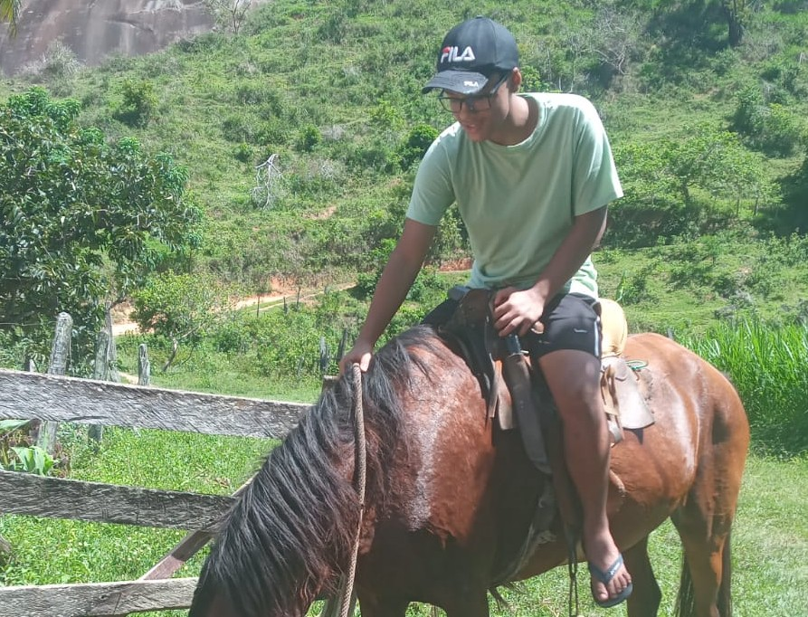
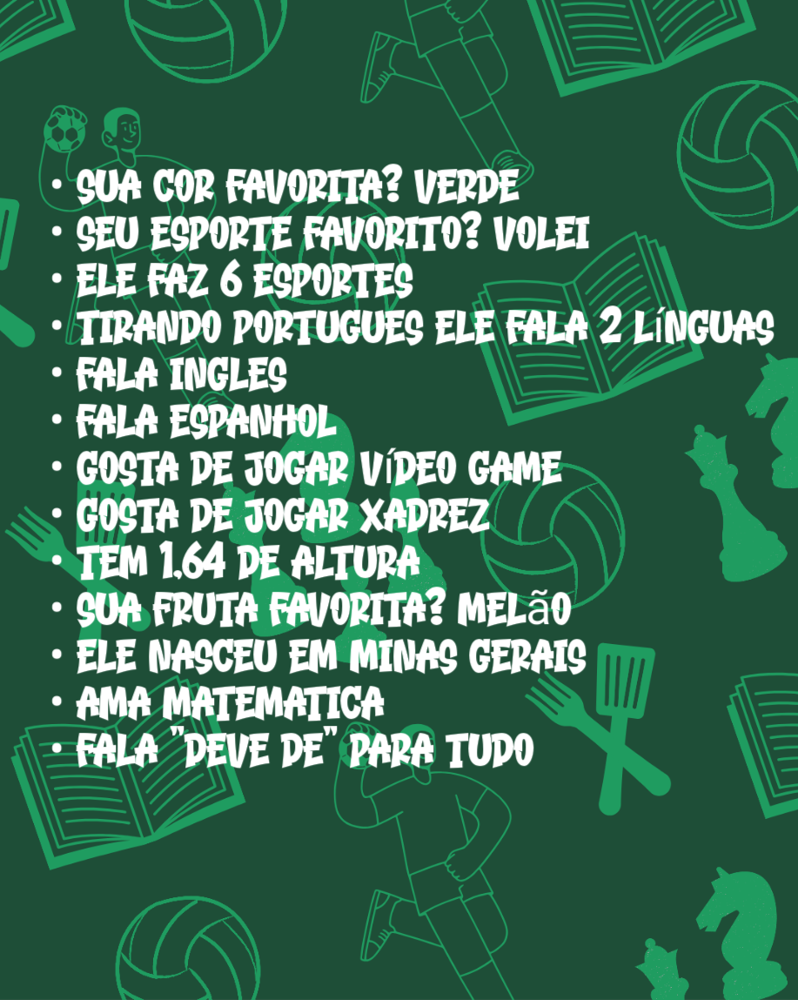
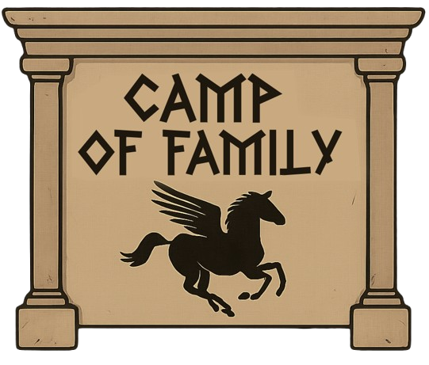
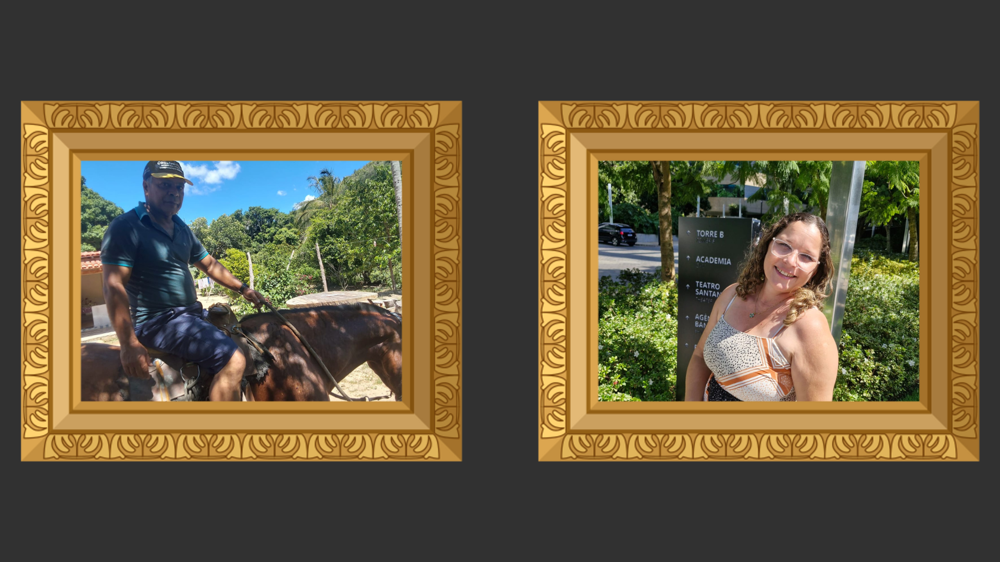
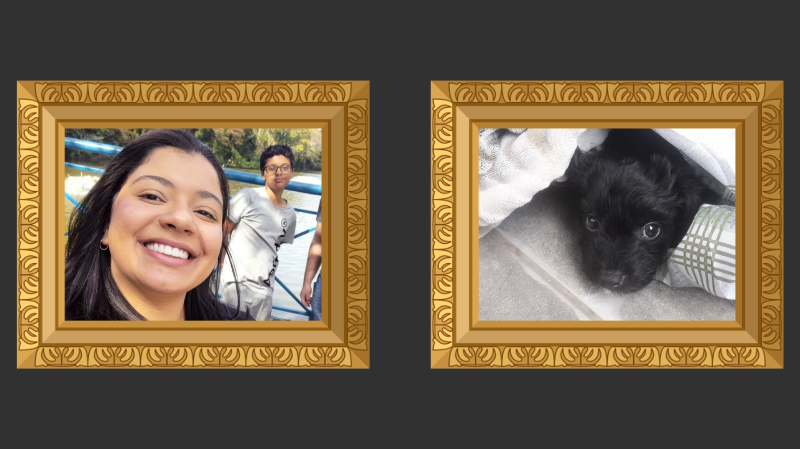
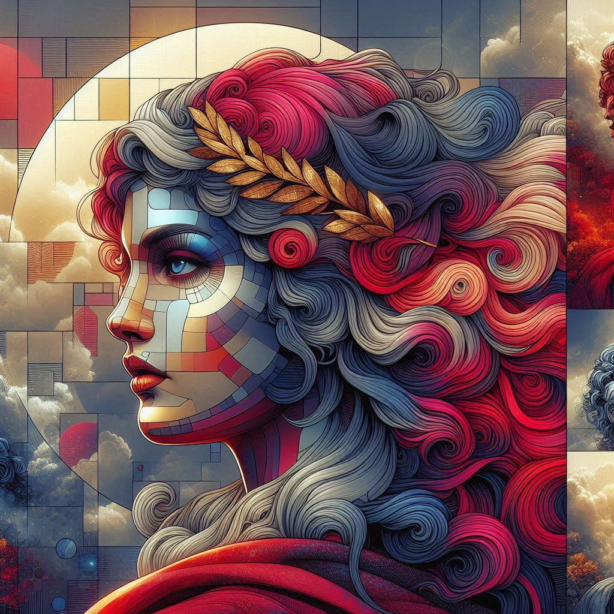
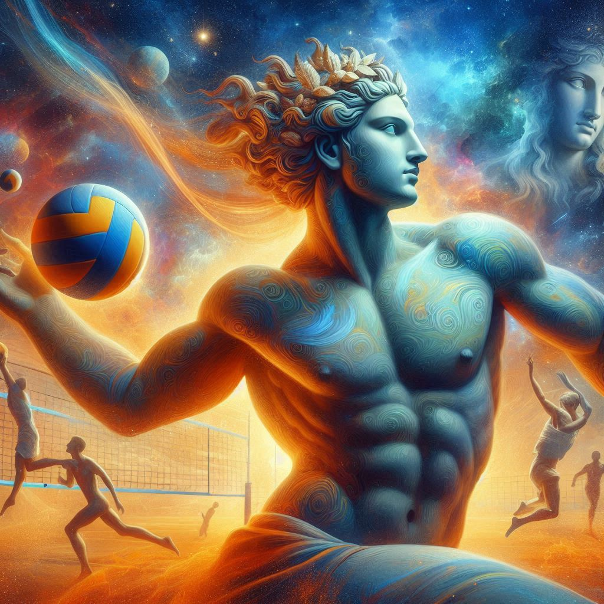
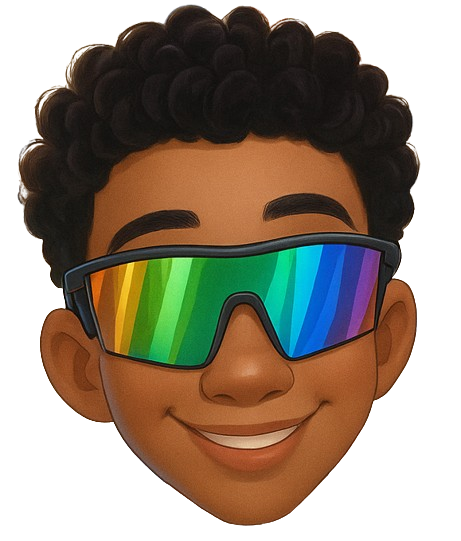

Kauan Felipe
Accidentally,I turn my introductory programming teacher into dust
I
olha, eu sempre quis ser amigo do Kauan.
Se você está lendo isto porque acha que não
é amigo dele, meu conselho é o seguinte: feche este site
agora mesmo. Vá conversar por horas sobre o assunto mais
aleatório que imaginar com ele e tente levar uma vida
normal.
Ser amigo do Kauan é incrível. É perfeito. Na
maioria das vezes, é maravilhoso e sempre termina com um amigo em
quem você pode confiar para tudo.
Se você não é amigo do Kauan e está lendo
isto porque acha que é uma bobagem, continue lendo.
Seu nome é Kauan Felipe.
Tem 15 anos de idade. Nos últimos meses, tornou-se
aluno da Etec Profª Ermelinda, uma escola
técnica voltada para jovens que buscam formação
profissional, localizada em Santana de Parnaíba,
São Paulo.
Coisas sobre ele? Vamos lá, uai!
Eu poderia começar de qualquer ponto da sua vida
— curta, mas feliz — para contar essa história. Mas
tudo começou mesmo no dia 28/03/2010, data do
seu nascimento em Minas Gerais (sim, ele é mineiro!).
Foi lá que viveu seus primeiros cinco anos, até se mudar
para Santana de Parnaíba, onde mora até hoje.
Foi aqui que Kauan conheceu pessoas muito importantes
em sua vida e viveu algumas das maiores loucuras
que você pode imaginar.
Mas agora, começa uma nova etapa: sua jornada na Etec.
E este site faz parte dessa nova fase, cheia de aprendizados,
desafios e, com certeza, novas histórias incríveis
para viver e contar.
01

KAURIOSIDADES


QUADRO DE FUNCIONÁRIOS


II
Meu nome é Kauan e, sim, eu moro num acampamento no meio do mato.
Não, não é tipo um acampamento de férias.
É onde eu moro mesmo. Com meu pai Samuel, que faz tudo parecer sobrevivência.
Minha mãe Vanusia tenta manter alguma ordem — o que, honestamente, é impossível.
Minha irmã Lilian vive no próprio mundo,fingindo que não nos ouve.
E o Mailow, meu cachorro, é provavelmente a criatura mais sensata aqui.
Hoje de manhã ele começou a rosnar pro mato. De novo.
Fiquei olhando, esperando aparecer um tatu, sei lá... mas nada.
Mailow ficou tenso, o pelo do pescoço eriçado.
— Deve ser só um gambá — disse meu pai, já pegando o facão.
Mas Mailow não rosna assim pra gambá.
Lilian saiu da barraca, ainda de pijama, comendo uma maçã.
— Ele farejou alguma coisa — disse, como se fosse óbvio.
O problema é que, da última vez que ele farejou "alguma coisa"
achamos simbolos gregos e meu pai mandou a gente nunca mais falar sobre aquilo.
Mas Mailow já tinha saído correndo.
E, claro, eu fui atrás. Porque quando seu cachorro corre
como se o mundo fosse acabar...é melhor você ir junto.
em resumo minha família é uma loucura
mas apesar de tudo eles são as pessoas
que eu mais amo nesse mundo e sempre estão comugo
para oque der e vier.
amo cada um de vocês
ass:Kauan
02
 (1).jpg)

Elisage
III
No primeiro dia de aula na Etec, Kauan sentia um frio na barriga como nunca antes.
Ele segurava firme a mochila enquanto olhava ao redor, procurando seu irmão Pedro.
Pedro chegou logo depois, sorrindo e tentando tranquilizar Kauan: "Vai dar tudo certo."
Mesmo assim, o nervosismo crescia... até que uma brisa suave passou por ele.
No meio da brisa, uma voz doce sussurrou: "Confie em si mesmo, Kauan."
Ele olhou para o céu e viu uma luz dourada brilhando — era a deusa Elisage.
Elisage, a guardiã da sabedoria, havia descido para ajudá-lo em sua jornada.
Com um gesto sutil, ela tocou o ombro de Kauan e um calor acolhedor o envolveu.
"O conhecimento é um caminho, não um obstáculo", disse ela antes de desaparecer.
Kauan respirou fundo e sentiu a confiança voltar aos poucos.
Logo na entrada da escola, ele conheceu Félix, um garoto alto e animado.
Félix sorriu: "Você é novo aqui, né? Vamos te mostrar tudo!"
Lucas apareceu logo depois, segurando um caderno cheio de desenhos incríveis.
"Se precisar de ajuda em Artes, pode contar comigo!", disse ele.
Mariane chegou por último, com um livro nas mãos e um olhar gentil.
"o lucas é gago", brincou ela, fazendo todos rirem.
Kauan se sentiu acolhido como nunca antes.
Pedro olhou para o irmão e percebeu que ele já não parecia tão nervoso.
A presença de Elisage ainda pairava no ar, invisível, mas reconfortante.
Durante o recreio, Kauan contou aos amigos sobre a deusa que o ajudou.
"Elisage?", perguntou Mariane. "Minha avó já falou dela!"
Félix arregalou os olhos: "Então é verdade? Ela existe mesmo?"
Lucas fez um desenho rápido de Elisage com asas douradas e olhos brilhantes.
"Assim?", perguntou, e Kauan assentiu, impressionado.
A amizade entre eles cresceu rapidamente nos dias que seguiram.
Toda vez que Kauan se sentia inseguro, lembrava-se da luz de Elisage.
Pedro se orgulhava do irmão e agradecia em silêncio à deusa.
Na biblioteca, encontraram um antigo livro sobre Elisage e suas aparições.
Descobriram que ela sempre ajudava quem estava prestes a viver algo grandioso.
E Kauan, agora, sabia que seu caminho na Etec seria exatamente isso.
Grandioso, iluminado... e abençoado pela deusa Elisage.
03

Esportelo
IV
Era uma manhã dourada no Olimpo dos Esportes, onde os deuses se reuniam
para o evento mais aguardado do século: o Torneio de Vôlei dos Deuses.
Entre titãs e semideuses, um nome ecoava entre as arquibancadas etéreas:
Kauan, o humano escolhido pelo próprio Esportelo, o lendário deus dos esportes.
Kauan não era um deus, mas possuía algo raro: coragem, paixão
e uma torcida barulhenta e fiel — seu irmão, Pedro e a inseparável amiga Thay.
Eles vibravam a cada ponto, gritando tão alto que até Zeus deu uma olhada curiosa.
Antes da partida final, Esportelo apareceu em um clarão dourado e disse:
— Kauan, hoje você jogará com o coração. Eu estarei com você em cada salto e saque.
E assim foi.
A partida começou tensa, com adversários como Apolo e Hércules do outro lado da rede.
Mas Kauan, com reflexos divinamente rápidos, defendeu bolas impossíveis
, fez aces reluzentes e cortou como um raio.
No set final, o placar marcava 24 a 24.
A bola veio alta, perfeita.
Kauan subiu com toda força da Terra e dos Céus.
O golpe ecoou como trovão.
Ponto final. Medalha de ouro.
A torcida foi à loucura.
Pedro chorava, Thay pulava, o irmão filmava tudo.
Esportelo sorriu do alto, orgulhoso.
E ali, no coração do Olimpo, Kauan foi eternizado como
o herói do Vôlei dos Deuses.
04
TESTE SEUS CONHECIMENTOS...
